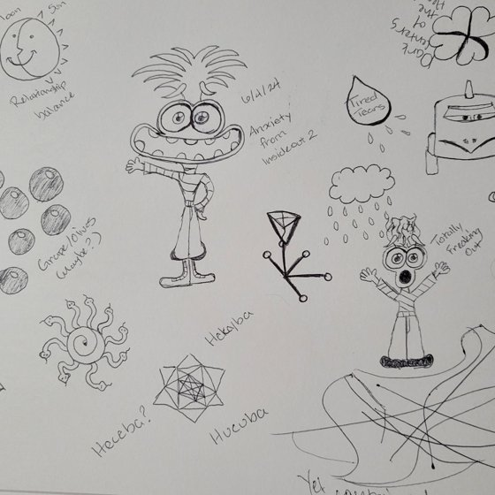
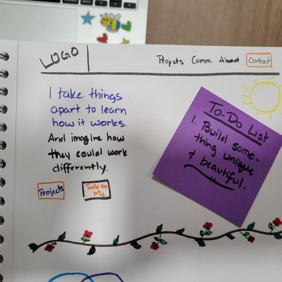
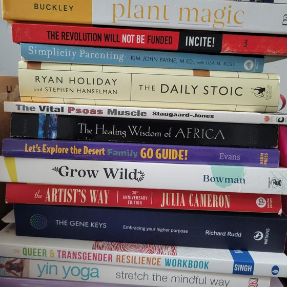
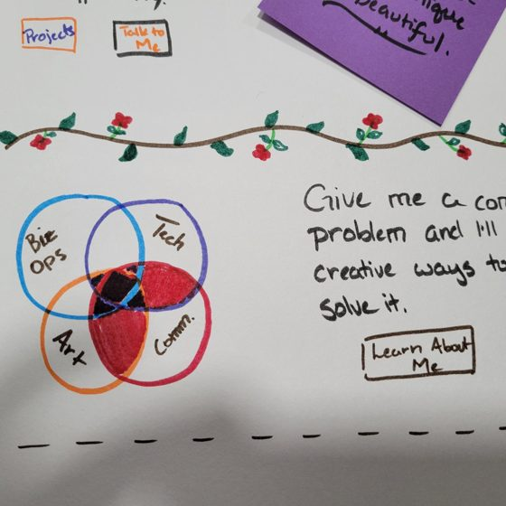
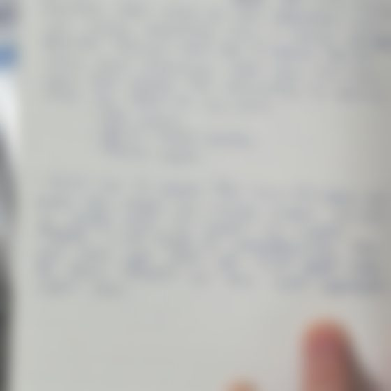
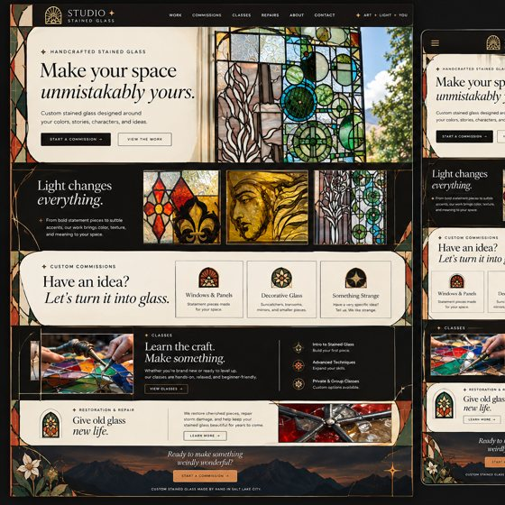
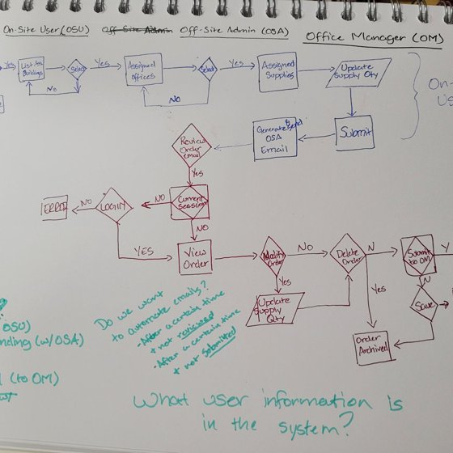
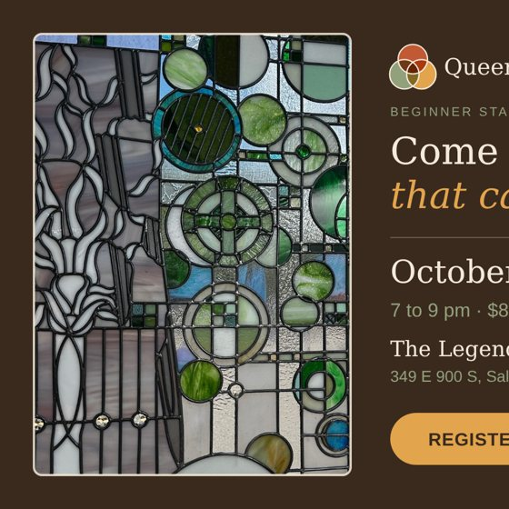
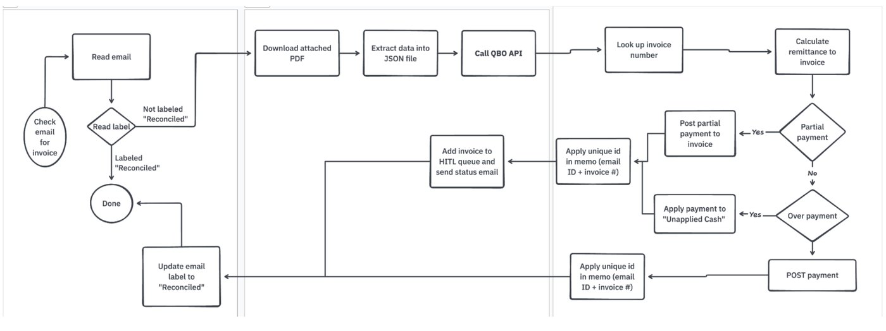
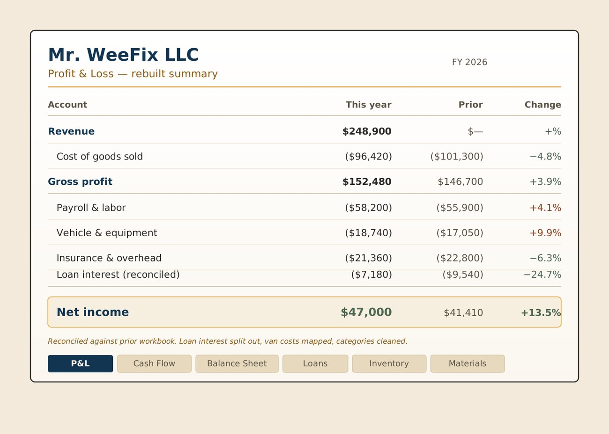

Danni's Creative Studio: a portfolio where the mess becomes the map
A cluttered desk, tidied, and the treasures surface.
✦
order from chaos · found in the void · beauty in the details
Scroll to discover

doodles

a sketch

what I'm reading

a diagram

a page

a mockup

a flowchart

a flyerorder from chaosfound in the voidbeauty in the details
What you uncover becomes the work.
✦
open a drawer to see its full story
The mess
Matching payment PDFs from email to open invoices in QuickBooks is slow, repetitive, and so easy to get wrong. The kind of task that eats a whole afternoon and still leaves you second-guessing it.
What I did
I mapped the whole flow, then built an AI agent to run it: check email, read the PDF, look up the invoice in QuickBooks, and apply the payment. Partial payments, overpayments, and anything that looks off get flagged for a human instead of posted blind.
What it became
A tedious job that now runs itself, with a human still holding the final call. Order, pulled out of the chaos.

the reconciliation flow, start to finish
The mess
A stained glass artist with real work to show and no home for it online. A blank page, a strong craft, and no map from one to the other.
What I did
I shaped a whole brand and site from scratch: the voice, the structure, and a look that feels like the glass itself, so the work has a place that honors it.
What it became
A site where light changes everything. Pulled out of the void.
A real small business, a fix-it shop, with books that did not quite add up. Numbers that did not match the prior year, loan interest buried in with the principal, van costs scattered everywhere. The kind of thing that makes tax season a nightmare.
What I did
I went line by line. Rebuilt the P&L from the ground up, split the loan interest out from the principal, mapped the vehicle costs, and reconciled every number against the old workbook until it all tied out. Then cash flow, balance sheet, and a plain-language advisory memo on top.
What it became
Books the owner can actually trust. The whole story is in the details, and I live for that part.

the rebuilt P&L, reconciled line by line
From the notebook
Insights
Notes, essays, and the questions I keep circling back to. This is where systems thinking meets real human stuff, written down as I figure it out. More coming as I post it.
Still writing this one. The real notes and essays are coming here soon, I promise.
Ways to work together
Offerings
Every project is scoped up front with a clear outcome, so you know exactly what you are getting before we start. A human stays in the loop the whole way, and AI only shows up where you decide it should. Nothing automated behind your back.
01
Foundation builds for solo founders
For BIPOC and LGBTQIA+ founders ready to grow past word of mouth.
Brand voice, palette, and a design system that sounds like you
A website built in your voice and made to get found, including inside AI search
Social accounts set up with templates and a rhythm you can actually keep
02
Automation and AI agent builds
For teams buried in repeat tasks like invoices, reconciliation, and reporting.
A working prototype built around your tools, like QuickBooks, Gmail, and Google Workspace
Built-in checks so a human stays in charge of the final call
A clean handoff so you can run and maintain it yourself
03
Human-first AI consulting
For individuals and small businesses who want to thrive with AI without burning out or losing their voice.
Right-sized tools and workflows for how you really work
Practical guardrails and approval steps your team will actually follow
Coaching that makes space for your pace and your values
Not sure which one fits? Tell me about the tangled thing you want to work better, and we will figure out the right shape together.